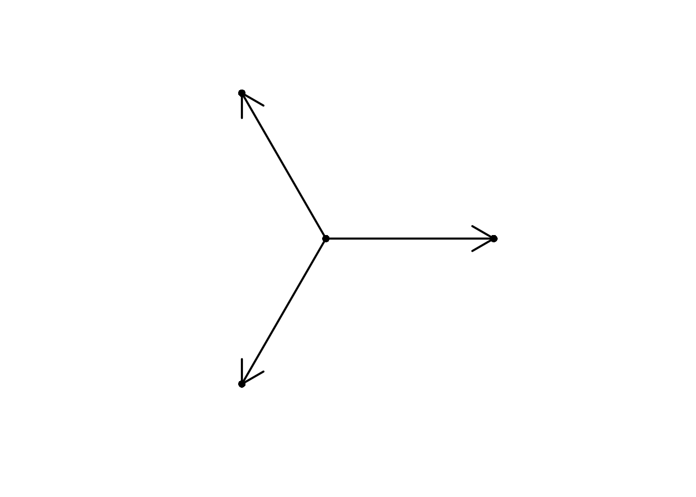
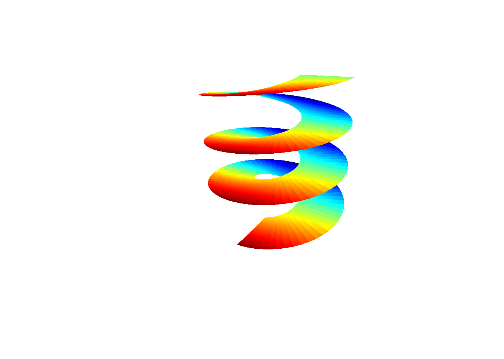

Math Notes
I love to design and teach new, and sometimes old, courses. Below are notes and problem sets from several of my courses. Most notes are accessible to undergraduate and advanced high-school students.
- Northwestern
- UWO
- Canada/USA Mathcamp
- JHU
- Expository notes
Northwestern
Introduction to Optimization
\[\begin{equation} \begin{array}{lrrrrrrrrr} \mbox{maximize: } & c_0 & + & c_1 x_1 & + & \dots & + & c_n x_n & \\ \mbox{subject to: } & & & a_{11} x_1 & + & \dots & + & a_{1n} x_n & \leq & b_1 \\ & & & a_{21} x_1 & + & \dots & + & a_{2n} x_n & \leq & b_2 \\ & & & & & \vdots & \\ & & & a_{m1} x_1 & + & \dots & + & a_{mn} x_n & \leq & b_m \\ & & & x_1, & x_2, & \dots &, & x_n & \geq & 0 \end{array} \end{equation}\]
In Winter and Spring 2022, I taught a quarter-long course at Northwestern on Introduction to Optimization. The course covers mainly linear programming and duality theory. The above course notes are accessible to students who have done linear algebra and some basic multivariable calculus (gradients).
UWO
Algebraic topology

In Winter 2021, I taught a semester-long course at UWO on Algebraic Topology aimed at graduate students and upper-level undergrads. The main textbook for the course was Hatcher but I rarely used the book at all. The course covers the fundamental group, covering spaces, and singular homology.
Discrete math
\[ \begin{align} \left|\bigcup _{i=1}^{n}A_{i}\right|=\sum _{i=1}^{n}|A_{i}|-\sum _{1\leqslant i<j\leqslant n}|A_{i}\cap A_{j}|+\sum _{1\leqslant i<j<k\leqslant n}|A_{i}\cap A_{j}\cap A_{k}|-\cdots +(-1)^{n-1}\left|A_{1}\cap \cdots \cap A_{n}\right| \end{align} \]
In Fall 2020, I taught a semester-long at UWO on Discrete Math aimed at second-year undergrads majoring in computer science. The course was fully asynchronous and I had to come up with several innovations to make it work. I curated a textbook on zyBooks and created several videos on YouTube to accompany the text. I used Piazza as a platform for discussions. With a lot of help from my department, we also created hundreds of questions on WeBWork which were then used the exams. This has been the most challenging and the most rewarding course I’ve ever taught.
Canada/USA 
Lean at MC2020

This is a completely interactive class on the Lean theorem prover from Mathcamp 2020 - you learn by solving exercises online. The prerequisites for this class are basic proof techniques.
Crash course on linear algebra

This is a week-long proof-based introduction to Linear Algebra class from Mathcamp 2018. The prerequisites are basic proof techniques. The class is designed in an IBL-format - you’re expected to solve all the problems in each section before moving to the next and in the process learn the subject.
Galois correspondence of covering spaces

This week-long class from Mathcamp 2019 covers (pun intended) the covering space theory for graphs and surfaces and is meant to be an introduction to algebraic topology and its connection to group theory. The prerequisites are group theory and basic minimal exposure to topology/analysis.
From high school arithmetic to group cohomology
\[ \begin{align} 0 \longrightarrow \mathbb{Z}/10 \longrightarrow \mathbb{Z}/100 \longrightarrow \mathbb{Z}/10 \longrightarrow 0 \end{align} \]
This is a week-long class from Mathcamp 2019 based on a fun paper by Dan Isaken titled A cohomological viewpoint of elementary school arithmetic. It introduces the notions of group extensions and exact sequences as means to interpret addition of multi-digit numbers. It is designed in an IBL-format - you’re expected to solve all the problems in each section before moving to the next and in the process learn the subject. The prerequisites are group theory.
Cohomology via sheaves

This is a week-long class from Mathcamp 2018 about Čech cohomology on graphs and cohomology computations for simple spaces. The class is designed in an IBL-format - you’re expected to solve all the problems in each section before moving to the next and in the process learn the subject. The prerequisites are linear algebra (over finite fields).
How curved is a potato?

This is a week-long class from Mathcamp 2018 about principal, Gaussian, and mean curvature of potatoes embedded in \(\mathbb{R}^3\). The prerequisites are linear algebra, in particular, the notions of eigenvalues and eigenvectors, and multi-variable calculus.
Would I ever lie group to you?

I taught this week-long class at Mathcamp 2018. This is a class about matrix groups and how they arise as symmetries of spaces. The prerequisites are linear algebra and group theory, in particular, group actions.
Riemann surfaces

I taught this week-long class at Mathcamp 2019. In this class, we construct Riemann surfaces as “graphs” of holomorphic functions. Towards the end we prove Fermat’s last theorem for function fields. The prerequisites are complex analysis.
The following are a few other classes I taught at Mathcamp. The notes are not very polished.
JHU
Honors single variable calculus

For two semesters, Fall 2017 & 2018, I taught an accelerated honors single variable calculus course at JHU. The course covers two semesters worth of calculus (integration and differentiation) in one semester. The course is designed in an IBL-format - you’re expected to solve all the problems in each section before moving to the next and in the process learn the subject. The prerequisites are pre-calculus and basic theorem proving.
Symmetries & polynomials
\[ \begin{align} {\sqrt[{3}]{-{\frac {q}{2}}+{\sqrt {{\frac {q^{2}}{4}}+{\frac {p^{3}}{27}}}}}}+{\sqrt[{3}]{-{\frac {q}{2}}-{\sqrt {{\frac {q^{2}}{4}}+{\frac {p^{3}}{27}}}}}}.\end{align} \]
This 2-week class from Intersession 2018 at JHU non-math majors to group theory and its connections to roots of polynomials, in particular, the unsolvability of the quintic. The class is designed in an IBL-format - you’re expected to solve all the problems in each section before moving to the next and in the process learn the subject. The prerequisites are basic proof techniques.

Expository notes
Following are some of my personal math notes. The notes have not been proofread and might contain errors.
- What is a Spectrum?
- h-principles MSRI Summer School
- Connections on Principal Bundles and Classical Electromagnetism
- Vector Fields on Spheres
- Steifel Whitney Numbers
- Homotopy of MO
- Representation Theory of Symmetric Group
- Geometry of Dirac Operators
- FIOs and Lagrangian Submanifolds
- Symplectic Geometry Course Notes
- Finite Gauge Groups TQFTs
- Classical Lie Groups
- Mosher and Tangora Notes